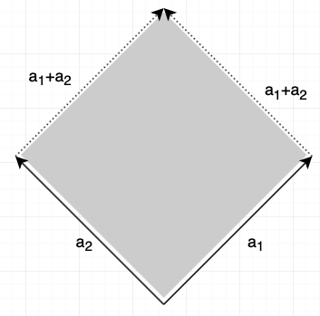

let A be n × n, \(x \in \Re^n\) is an eigenvector of A if x ≠ 0 and \(\exists \lambda \in \Re\) such that \(Ax = \lambda x\)
x is eigenvector with corresponding eigenvalue λ.
Is a given vector \(u \in \Re^n\) an eigenvector of a given A (n × n)?
Is a given λ an eigenvalue of A?
The solution set of \((A-\lambda I_n)x = 0\) is the eigenspace corresponding to λ.
How to find a basis for the eigenspace of a given λ?
If λ = 0, then Ax = 0 has a nontrivial solution (and A is not invertible).
Eigenvectors corresponding to distinct eigenvalues are linearly independent.
Geometric interpretation: let \(A = [a_1 \; a_2]\). then the determinant (absolute value) is the surface area (or volume in 3D):

Let A (n × n). A ~ U without scaling and using r row interchanges. then \(\det A = (-1)^r u_{11} \times \dots \times u_{nn}\)
A is invertible iff \(\det A \ne 0\)
\(\det AB = (\det A)(\det B)\)
λ is an eigenvalue of A iff \(\det (A-\lambda I) = 0\) (the characteristic equation of A)
The eigenvalues of A (n × n) are the solutions for λ. Multiplicity is the number of solutions for λ.
given A and B (n × n), A is similar to B if ∃p s.t. \(A = PBP^{-1}\)
If A and B are similar, then they have the same characteristic polynomials (and the same eigenvalues with the same multiplicities)
A is diagonalizable if A is similar to a diagonal matrix.
Diagonalization Theorem: A (n × n) is diagonalizable iff A has n linearly independent eigenvectors (the eigenbasis for \(\Re^n\))
\(A = P D P^{-1} \leftrightarrow\) columns of P are linearly independent eigenvectors, and the diagonal values of D are the eigenvalues corresponding to the eigenvectors in P.
How to diagonalize a matrix:
If A (n × n) has n distinct eigenvalues, it is diagonalizable.